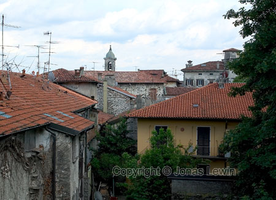

In
the north east of Italy, there are really many nice roads for Motorcycles.
In
the north east of Italy, there are really many nice roads for Motorcycles.
The small river on the left has really clear water, and it is very cold
as well. Just behind where I was standing, a couple where resting in the
sun, trying to get some color from the sun. Being there on the rocks looked
a bit strange, as they where wearing bathing suites.
Another
nice road for bikers.
The
local pizzeria. The building style resembles quite much the Swiss ones, in
the alps.
Nice
scenery, and fairly nice roads for bikes.
The
road sign says it all. Warning: there could be a queue ahead. And sure
enough, there is.
These photos where shot in the north west of Italy in 2004.
Nice
scenery, close to Alba.
It's
official: I've been in Torino ;-).
 A
small town road with the very classic Italian small village look.
A
small town road with the very classic Italian small village look.
When
you have this weather, and these roads, It's quite nice to be on the road.
Stopping
for the night in Arona, this is the view from the hotel.
30
minutes after the above shot, the roof looked like this. There was a hail
storm appearing from nowhere, followed by some short rain. The streets and
roofs where covered in white hail.
The
small towns around Lago Maggiore reminds me of the small towns between
Geneva and Lausanne. Quite nice to spend a few hours in as a tourist.
But
there are some differences to the above mentioned towns in Switzerland: The
strange small islands in the middle of nowhere in the lake. I wonder how it
is on the island here.
Oh well, I guess that I will never find out.